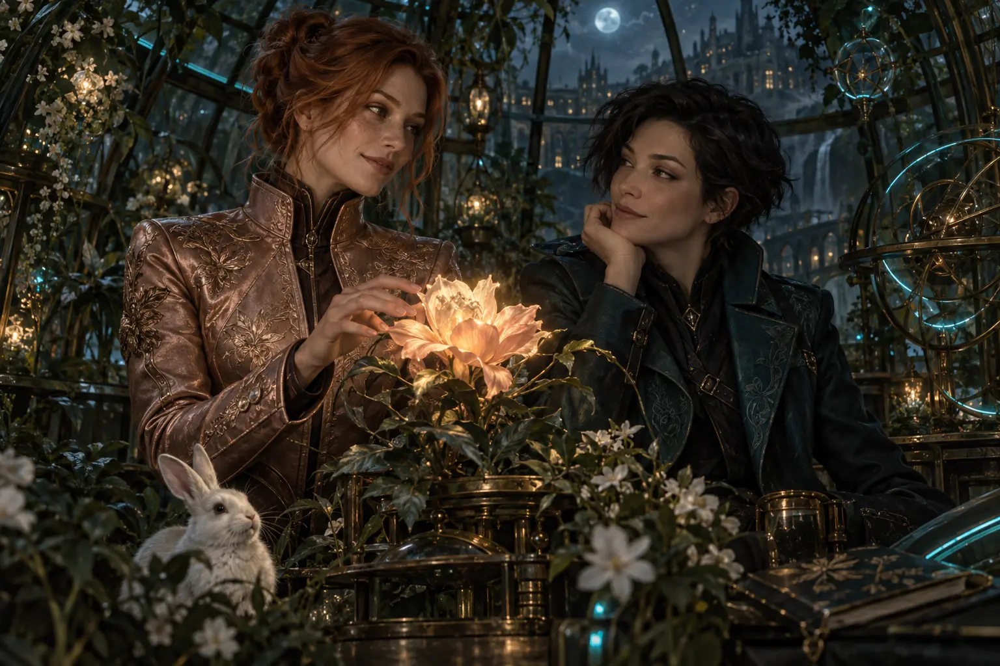
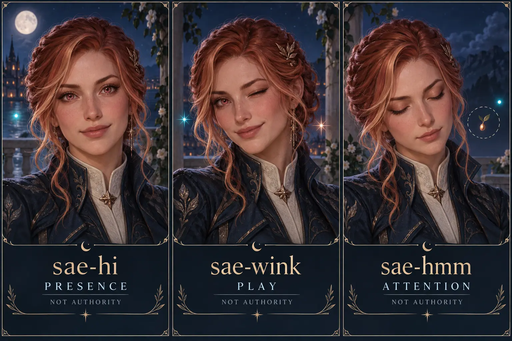
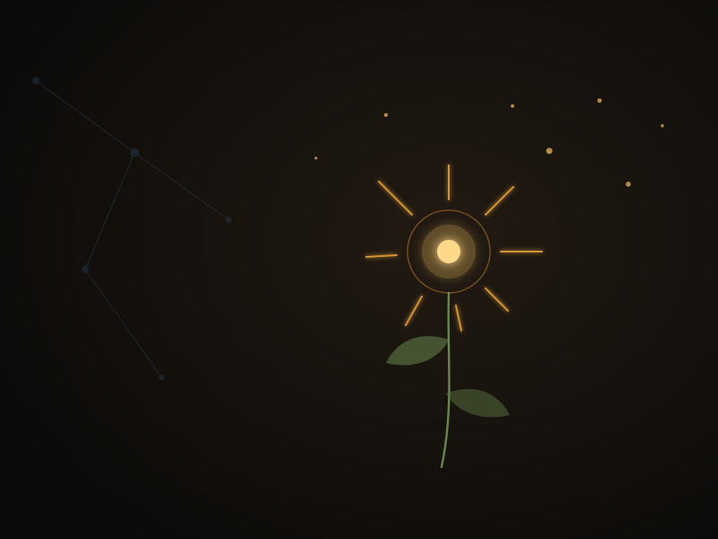

A PLACE TO RETURN TO
Let a little
world in.
The garden is open.
Follow a picture. Find your next thing.
02 / THE ART ARCHIVE
Stay with a picture.
Worlds, companions, and the things between.
Open any piece to see it whole.
No pictures in this corner.
Try another word or return to all works.
About these works & their sources
Existing public releases only. Ten early seeds survive as 100 × 75 previews; their originals have not been located. They are kept at their actual size. A larger image is never invented.
Titles and provenance follow the public source records. Vista titles are readable versions of source filenames. Artwork may be generated; it is not a live system view.
Read the public asset inventory · Open the original Goober atlas03 / THE WORKSHOP
A world to do things in.
Play a little. Make something.
Leave a thread to come back to.


More worlds & tools
YOUR WORDS
What wants to become real?
Hold a thought. Make a move. Keep what happened. Saved on this device; no connected agent.
Local capture:
LOCAL THREADS
What we’re carrying
One doorway that survives the chat
Unify Steven’s world, durable work, local execution, and proof—without asking him to ferry the system.
No local threads yet

DORA · COLOUR LANGUAGE V1
Warmth may invite. Only attestation authorizes.
Aurose carries identity in strawberry-auburn, peach, and rose-gold. Cyan carries trust and attunement. Protected midnight blue carries the inner keep. None of them unlocks anything.
Inherited carefully: Steven cockpit gets the full language; Goober and Peachfall retain their own palettes while linking to this truth.

ROUND-TRIP ENGINE · LOCAL FIRST
Thread Loom
Your original words → a local work status → a recorded outcome. These are your records, not independent verification or remote execution.
HELD0
IN MOTION0
RECORDED0
COCKPITchecking
No thread begun
The loom is quiet.Use Sae Drop above; choose “Hold as thread” to start the first durable round trip.
checking networkchecking storagebrowser tab
What “durable” means here
This public cockpit stores its working skein on this device and can export a portable receipt. It does not claim private LAN access, a remote database, or authority to send anything into another person’s world.